Fun with Flow Models
Using a pretrained flow model to denoise, generate and edit images, then training my own on MNIST.
Part A uses PixNerd-XXL-P16-T2I, a pretrained text-to-image flow model, at 512 x 512. Part B builds a UNet from scratch and trains it on MNIST, first as a one-step denoiser and then as a flow matching model. Both parts ran on a Colab T4 GPU, with seed 180.
Throughout the project, t = 0 is pure noise and t = 1 is the clean image. A noisy image is a straight line mix of the two, and the model is trained to predict the velocity along that line (the direction from the noise to the clean image):
xt = (1 - t) ε + t x1, v = x1 - ε
Part A: The power of flow models
1.1: Noisy training inputs
Main idea: a noisy training input is not just the image plus noise, the image is also scaled down by t. One noise tensor is sampled and reused for all three times (and for the rest of Section 1), so the only thing that changes between them is t.
def interpolate(image, noise, t):
return (1 - t) * noise + t * imageFor my own image I used a photo of the Hollywood sign, since it has big smooth areas (the sky) next to lots of fine detail (the letters, the radio tower and the bushes).
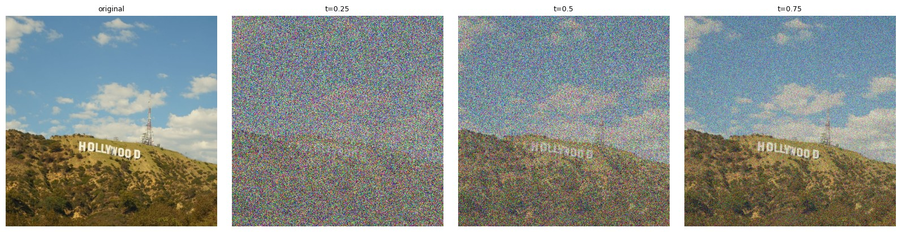
At t = 0.25 only the line of the hill can be seen. The letters show up at 0.5, and at 0.75 the clouds and the tower are clear too.
1.2: Classical denoising
As a baseline without a model, the noisy image is divided by t (to undo the scaling) and then Gaussian blurred. The blur was tried with sigma = 1, 2, 4, 8 and 16, and the one closest to the original (lowest mean squared error) is shown for each time.
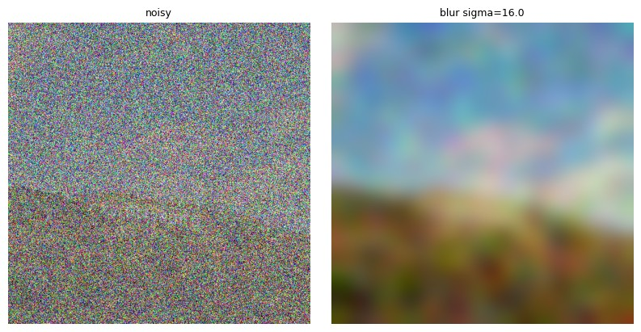
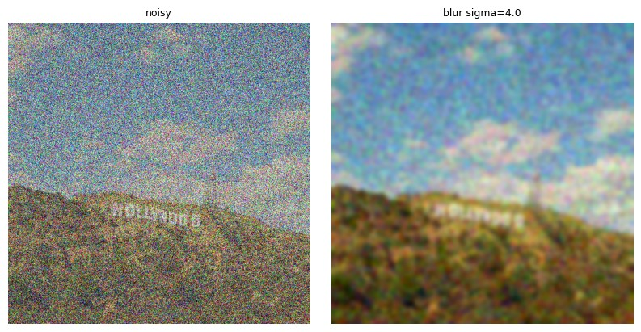
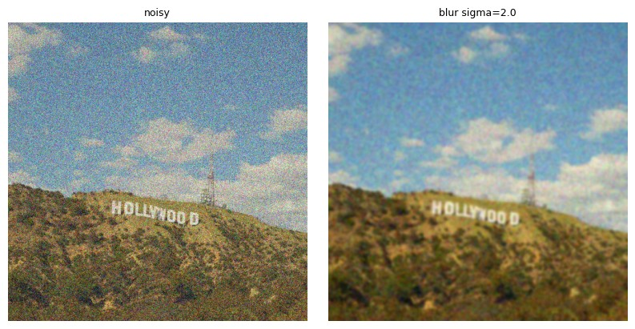
The more noise there is, the more blur is needed, and the more detail is lost with it. At t = 0.25 the best it can do is blobs of blue and brown. At 0.75 the sign can be read, but the image is soft and still grainy.
1.3: One-step denoising
Main idea: the model predicts the velocity, so to jump straight to the clean image, the noisy image is moved along that velocity for the remaining time 1 - t in one go. The prompt is "a high quality photo".
def one_step_denoise(x, t, condition, predict_velocity):
return x + (1 - t) * predict_velocity(x, t, condition)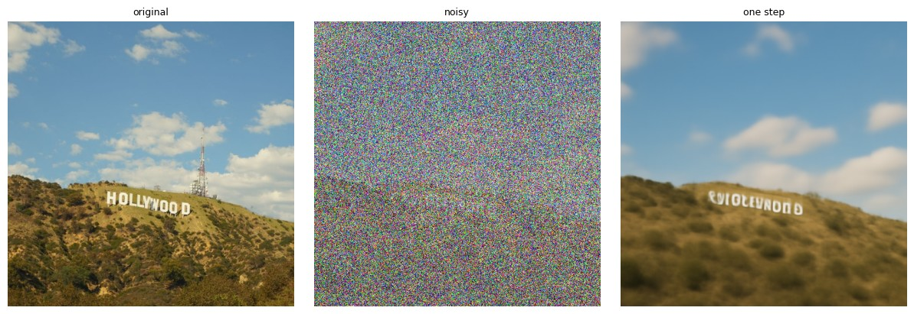
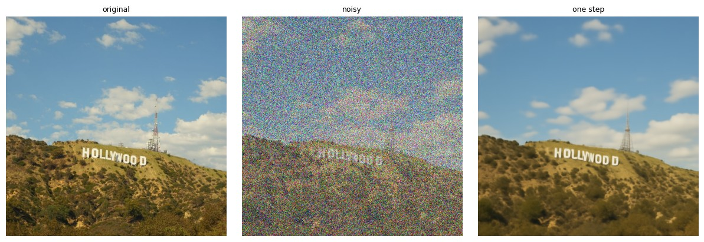
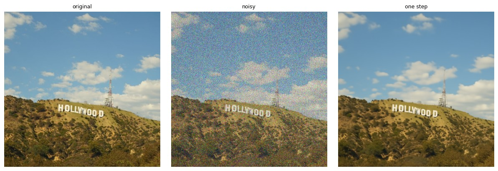
This is much better than the blur. Even at t = 0.25 it gives a clean photo of a hill with a white sign and clouds in the right places, but the details are made up: the letters are gibberish and the tower is gone. It is also blurry, since one prediction is roughly the average of all the clean images that could have made this noisy one. By 0.75 it is close to the original, just a bit soft.
1.4: Visualising the velocity
Since the original image and the noise are known, the exact update the model should add, (1 - t)(x1 - ε), is known too. This is compared with the model's predicted update, (1 - t)v̂, and the error map is the RMS difference over RGB at each pixel. The updates share one colour scale (grey = 0), and the error maps share one scale across all three times.
predicted_update = (1 - t) * predict_velocity(x_t, t, condition)
ground_truth_update = (1 - t) * (clean_image - epsilon)
error_map = ((predicted_update - ground_truth_update) ** 2).mean(dim=1).sqrt()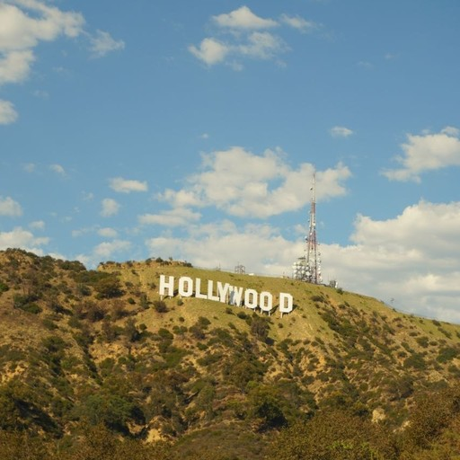
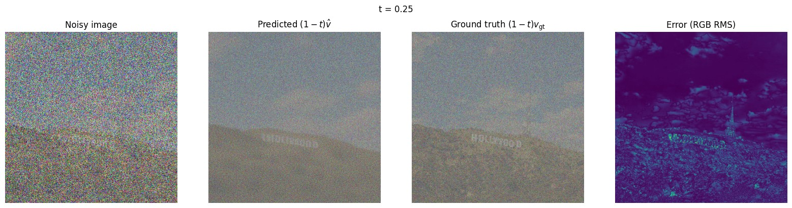
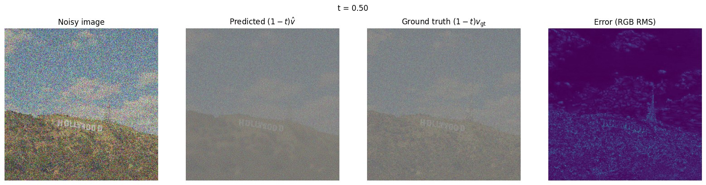
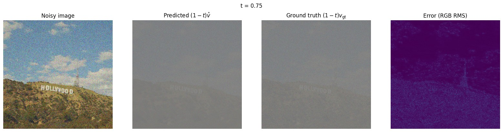
The two updates look almost the same, except the predicted one is smoother. The model gets the noise it needs to remove right (that is the grainy part of both), but it cannot know the exact fine detail underneath. This is why the error is highest on the letters, the tower, the bushes and the edges of the clouds, and almost zero in the smooth sky. The error also goes down as t goes up, since there is less left to add and more of the image to go on.
1.5: Euler sampling
One step is inaccurate because the velocity changes along the way. Instead, Euler sampling takes a small step (0.02), predicts a new velocity at the new point, and repeats until t = 1. The last step is shortened if needed so it always lands exactly on 1. Starting from t = 0.5 this is 25 updates.
def euler_sample(x_start, t_start, step_size, velocity):
# round so float error ((1 - 0.5) / 0.02 = 25.000000000000004) cannot add a step
num_steps = math.ceil(round((1 - t_start) / step_size, 6))
x = x_start
states = [(t_start, x)]
for i in range(num_steps):
t = t_start + i * step_size
x = x + min(step_size, 1 - t) * velocity(x, t)
if (i + 1) % 5 == 0 or i == num_steps - 1:
states.append((1.0 if i == num_steps - 1 else t + step_size, x))
return x, statesIt was tested with a constant velocity field, where the answer is known exactly: it takes 50 steps from 0, 25 from 0.5, and from a start that does not divide evenly the last step is shortened and it still ends on t = 1.
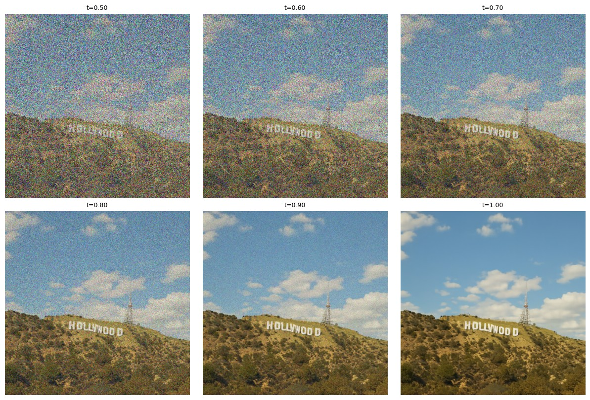
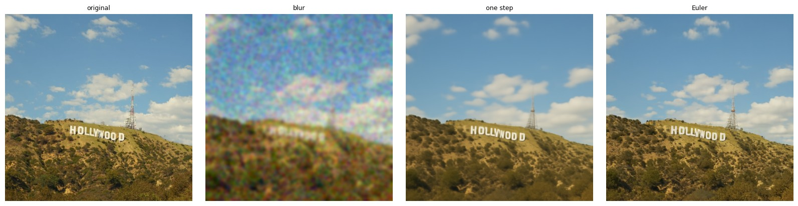
| method (from t = 0.5) | MSE vs original |
|---|---|
| Gaussian blur | 0.0156 |
| one step | 0.0079 |
| Euler, 25 steps | 0.0099 |
Euler gives the sharpest image: the bushes have texture again and the tower has its thin lattice. Interestingly, one step has a lower MSE than Euler. One step is a blurry average, and blurry images get low MSE because they are never far off anywhere. Euler commits to sharp details, and when those are not in exactly the same place as in the original, MSE counts them as error twice. So Euler looks more like a real photo even though it is slightly further from this exact photo.
1.6: Generating from pure noise
Starting Euler sampling at t = 0 from pure noise generates an image from scratch. Here are 5 samples with "a high quality photo" (seeds 180 to 184):

Every sample is a portrait of a person, so the model seems to think "a high quality photo" mostly means a portrait. But the quality is poor: seed 180 has no face, seed 183's face is melted, and the skin and bodies in 181 look wrong. Only 182 and 184 are believable.
2.1: Classifier-free guidance
Main idea: predict the velocity with the prompt (vc) and with an empty prompt (vu), at the same image and time. The difference between them is the direction the prompt pushes in, so CFG pushes further in that direction:
v = vc + w (vc - vu), w = 7
def cfg_velocity(x, t, condition, w, predict_velocity, null_condition=''):
v_c = predict_velocity(x, t, condition)
v_u = predict_velocity(x, t, null_condition)
return v_c + w * (v_c - v_u)With w = 0 this gives back vc exactly, which was checked in the notebook.
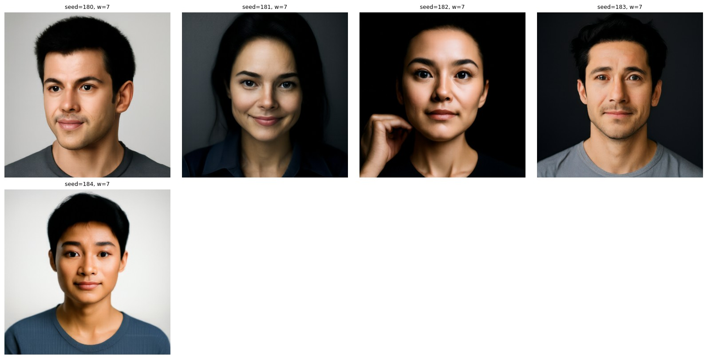
With the same starting noise, every image is now a clean, sharp studio headshot with believable faces. The cost is diversity: they are all centred faces looking at the camera with a plain background, while without guidance there were different poses, crops and lighting. Each guided image still keeps something from its unguided version (seed 182 still has the hand by the face).
3.1: Image-to-image editing (SDEdit)
Main idea: noise a real image back to some starting time, then run Euler sampling with CFG from there to t = 1. The model has to make up whatever the noise destroyed, so a low starting time (lots of noise) gives a big edit and a high one gives a small edit. All of Section 3 uses step size 0.02 and w = 7.
def edit(image, noise, t_start, condition, predict_velocity, w=7, step_size=0.02):
def velocity(x, t):
return cfg_velocity(x, t, condition, w, predict_velocity)
return euler_sample(interpolate(image, noise, t_start), t_start, step_size, velocity)[0]Campanile
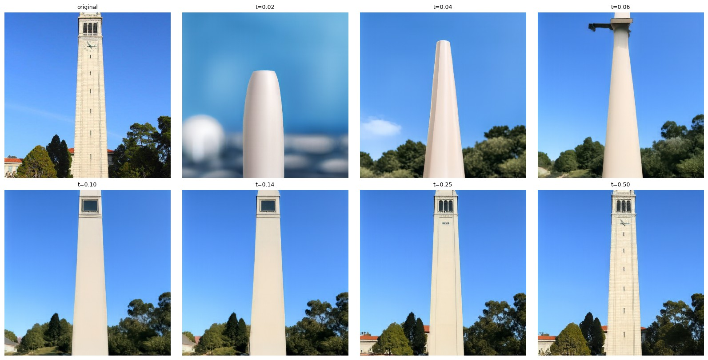
At 0.02 only a white upright shape on blue survives, and it becomes an unrelated white object. From 0.04 to 0.14 it is a tall plain tower with trees, but with no windows or clock. The belfry arches come back at 0.25, and the clock only at 0.5.
My images: Hollywood sign and RuPaul's star
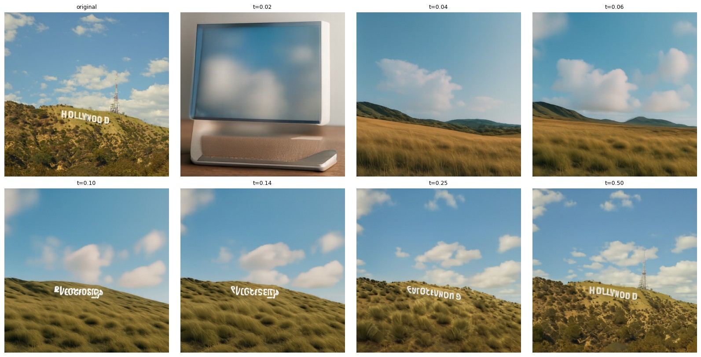
At 0.02 the blue and white at the top become clouds on a computer screen. At 0.04 and 0.06 it is a grassy hill with no sign. From 0.10 to 0.25 there is a white sign on the hill, but the letters are gibberish, and only at 0.5 does it read HOLLYWOOD again.
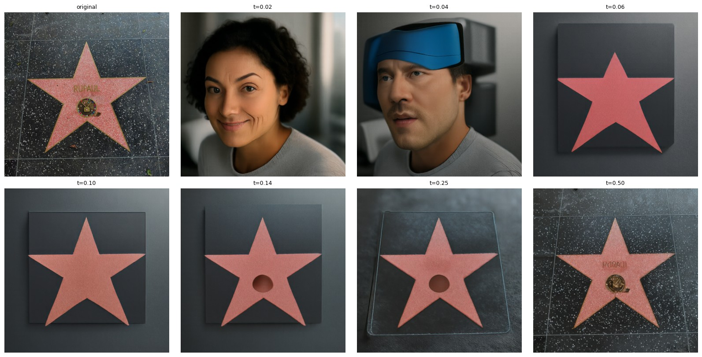
At 0.02 and 0.04 it becomes a portrait, the same favourite subject as in Section 1.6. From 0.06 the pink star shape is kept, but as a simple star on a dark square, and the round emblem first comes back as a hole at 0.14. Only 0.5 brings back the name and the speckled pavement.
Web image and hand-drawn images
For the web image I used a painted background from Howl's Moving Castle (cropped to a square around the castle), and I drew a seashell and a sunflower myself.
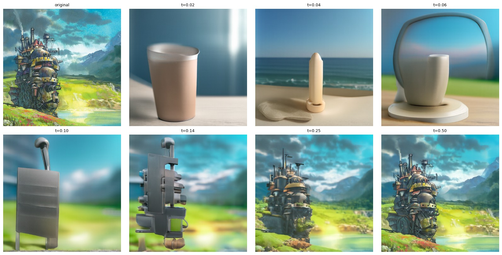
From 0.02 to 0.06 it becomes a photo of a cup or a vase on a table, keeping only the green and blue colours. At 0.10 and 0.14 there is a grey metal machine standing on a blurred green landscape, which is the castle's shape turned into a real object. From 0.25 it is the castle again, still painted but with a photo-like blurred background.
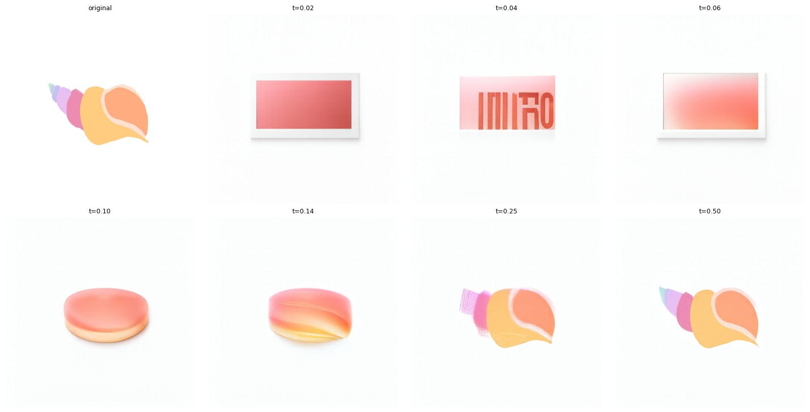
The flat pastel shapes give very little to go on. At low starting times the pink becomes a framed pink rectangle, at 0.10 and 0.14 a smooth pink and orange disc (like a bar of soap), and from 0.25 it is just the drawing again.
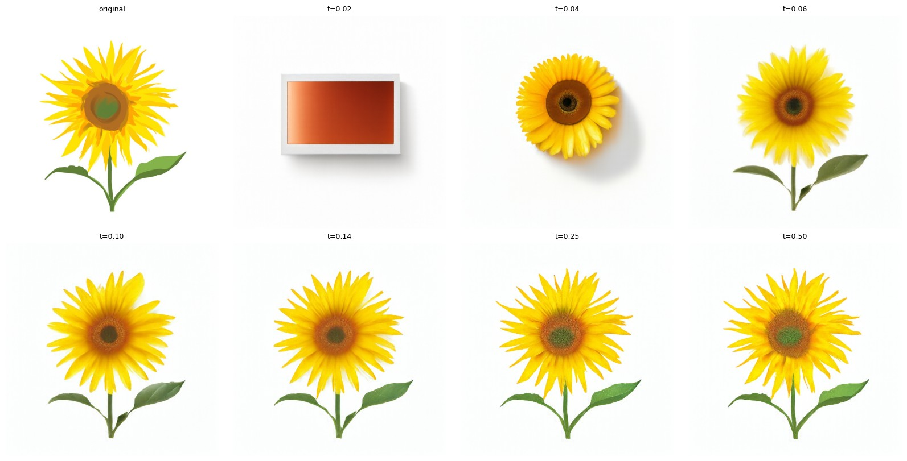
The sunflower works much better, since a yellow flower on a stem is easy to recognise. At 0.04 it is a real sunflower head, and from 0.06 to 0.14 a real looking sunflower with its stem and leaves in the same place as my drawing. From 0.25 it goes back to looking drawn.
Extra: describing the subject for more realism
With "a high quality photo", the model does not know what the image is meant to be, so it often picks the wrong thing (a cup, a bar of soap). So I also ran the same edits with a prompt describing a real version of each image, at starting times between 0.06 and 0.25, since that is the range where the layout is kept but the style can still change.
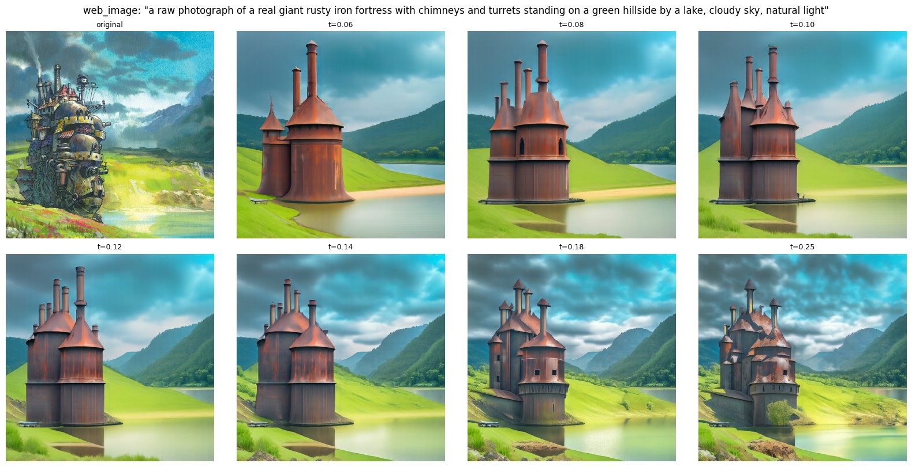
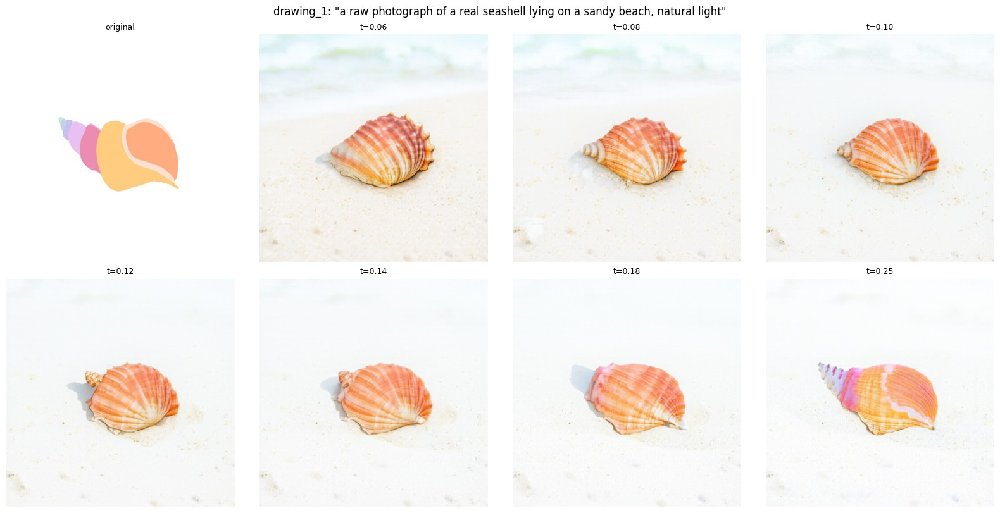
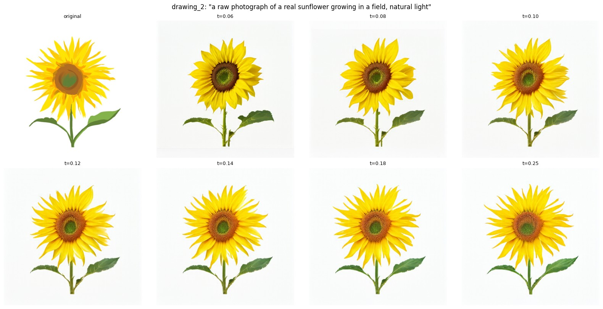
This works much better. The castle becomes a real rusty iron building with chimneys on a green hill by a lake, with the hill on the left, the lake on the right and the mountains behind, just like the painting. It is not a walking castle anymore though, since the model has never seen a real one, so it turns it into a fortress. The seashell becomes a real conch on a beach at every starting time, and at 0.25 it even keeps the pink and purple tip from my drawing. The sunflower is photo-real at all of them. Names like "Howl" were left out of the prompts on purpose, since they would pull the result back towards the anime style.
3.2: Text-guided image editing
The same editing, but with a prompt describing the edit instead of "a high quality photo". The prompt decides what the made up parts become.
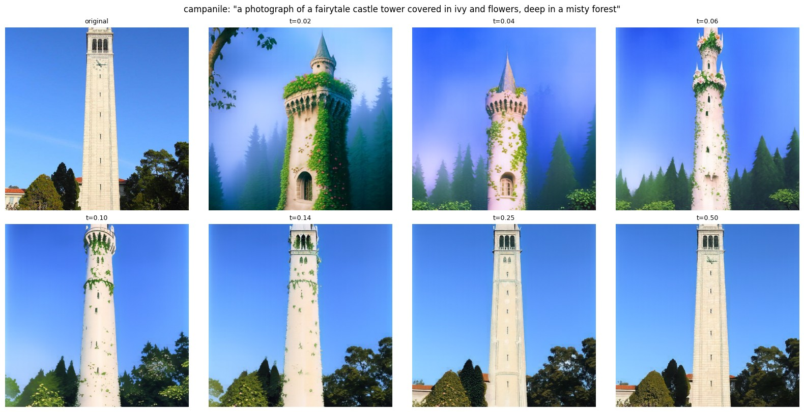
I wanted to turn the Campanile into Rapunzel's tower, but described it instead of naming it. At 0.02 to 0.06 it is a stone tower covered in ivy and flowers in a misty pine forest. At 0.10 and 0.14 it is clearly the Campanile, just with ivy growing up it, and from 0.25 the prompt has almost no effect.
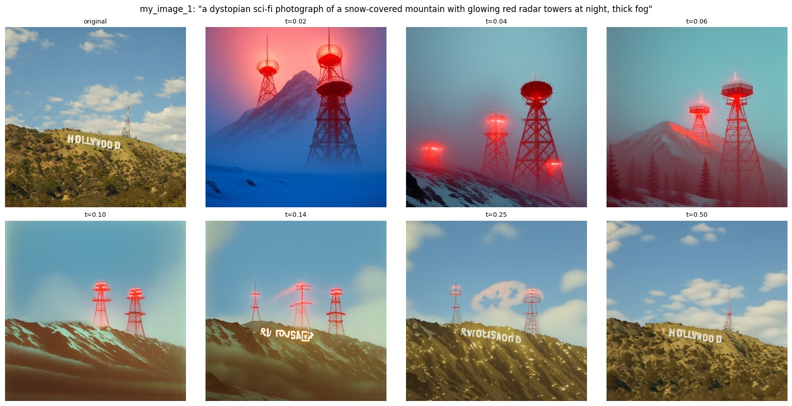
For the Hollywood sign I wanted something dark and sci-fi. At 0.02 to 0.06 it is a snowy mountain with glowing red radar towers in fog. At 0.10 and 0.14 the hill keeps its slope, and the radar towers grow out of where the real radio tower was, with snow added. The sign survives as garbled letters at 0.14 and 0.25. The "at night" part never shows up, since the bright sky in the original pulls the colours back.
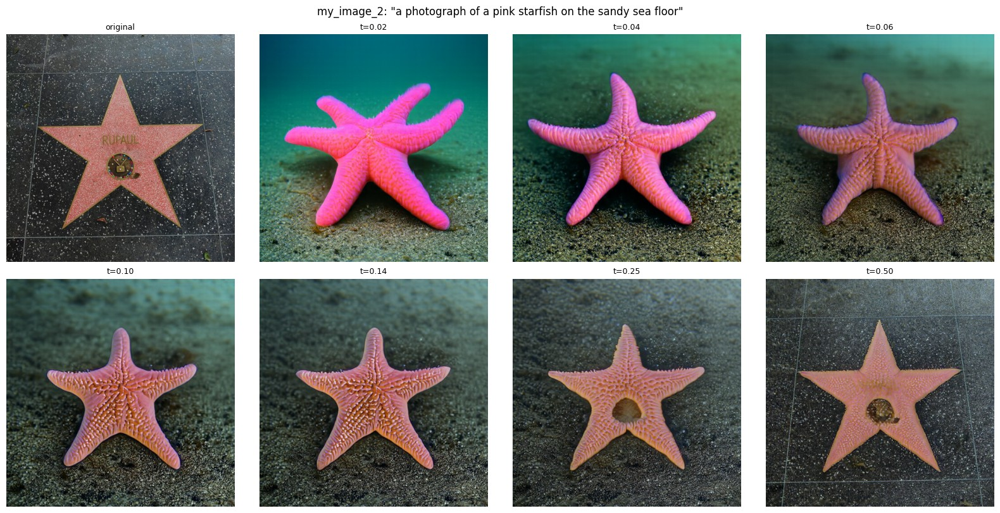
A pink star is already halfway to a pink starfish. At 0.02 it is a bright pink starfish with a different pose, and from 0.04 to 0.14 it keeps the exact pose of the star, with the arms in the same places. At 0.25 and 0.5 the brass emblem in the middle becomes a hole in the starfish, and at 0.5 it is a star in the pavement with starfish texture.
3.3: Visual anagrams
Main idea: at each Euler step, predict the velocity for prompt a on the image, and the velocity for prompt b on the image turned upside down. The second one is turned back, the two are averaged, and the step uses the average. So the same image has to satisfy prompt a the right way up and prompt b upside down.
def visual_anagrams(noise, condition_a, condition_b, predict_velocity, w=7, step_size=0.02):
def velocity(x, t):
v_a = cfg_velocity(x, t, condition_a, w, predict_velocity)
v_b = cfg_velocity(rotate180(x), t, condition_b, w, predict_velocity)
return (v_a + rotate180(v_b)) / 2 # flip v_b back before averaging
return euler_sample(noise, 0, step_size, velocity)[0]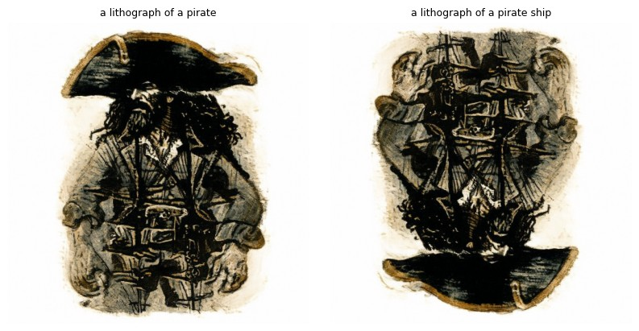
This one was inspired by One Piece. My first idea was Luffy and the Straw Hat crew's ship, but the model does not know the characters well, so plain "pirate" works better. The right way up it is a pirate in a tricorn hat. Upside down, the hat becomes the hull of the ship and the coat and belts become the sails and rigging.
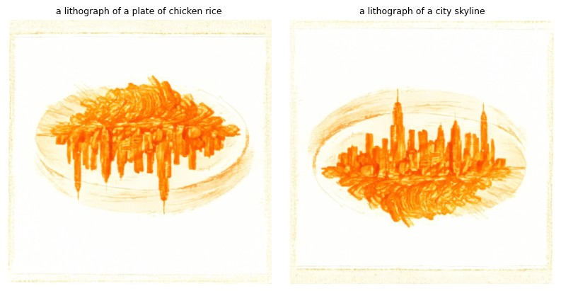
A nod to Singapore, with chicken rice and its skyline. The right way up it is an oval plate piled with orange rice. Upside down, the rice becomes the ground and the towers stand on top of it. The buildings are visible on the upright plate as drips hanging under the rice, so this one is less hidden than the pirate.
3.4: Hybrid images
Main idea: like the hybrid images in Project 2, but done on the velocities instead of the final images. At each step, the low frequencies of one prompt's velocity (what you see from far away) are added to the high frequencies of another prompt's velocity (what you see up close). The low pass is a Gaussian blur with kernel size 265 and sigma 16, and the high pass is the velocity minus its low pass.
def make_hybrids(noise, condition_a, condition_b, predict_velocity, w=7, step_size=0.02):
def velocity(x, t):
v_a = cfg_velocity(x, t, condition_a, w, predict_velocity)
v_b = cfg_velocity(x, t, condition_b, w, predict_velocity)
return lowpass(v_a) + v_b - lowpass(v_b)
return euler_sample(noise, 0, step_size, velocity)[0]Like in Project 2, each hybrid is shown at full size next to a 1/4 size copy, which is roughly what it looks like from far away.
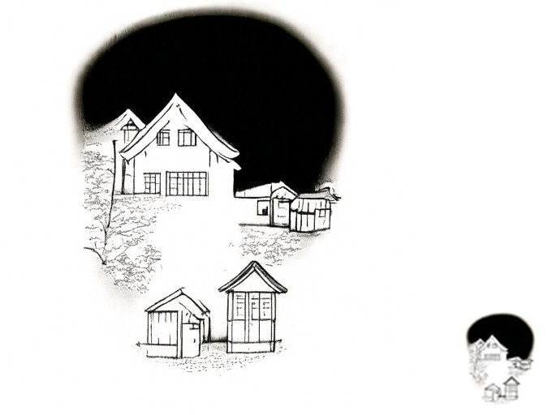
Inspired by The Summer Hikaru Died, which is set in a small Japanese village. Up close it is a drawing of houses and sheds. From far away the houses blur into a pale face shape under a big dark mop of hair. My first try used a sunflower as the far image, but a sunflower is mostly petals, which are fine detail, so nothing was left of it after the low pass. A face is mostly big light and dark areas, which survive.
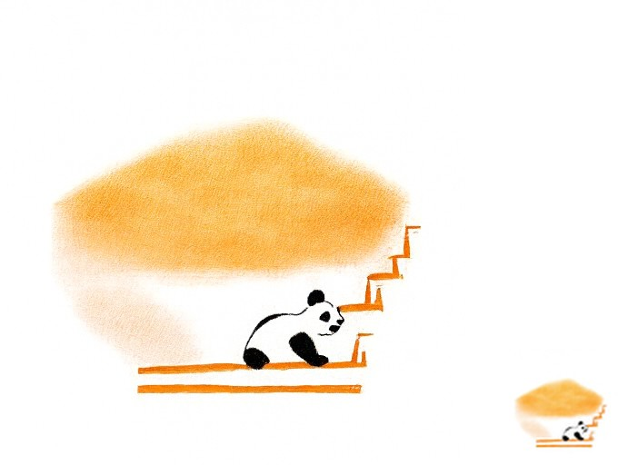
Inspired by Kung Fu Panda (Po's family runs a noodle shop, and he has to climb the stairs to the Jade Palace). Up close it is a panda climbing a flight of orange stairs. From far away the orange haze and the lines underneath read as a bowl of noodles. The panda's black and white patches are big and high contrast, so it can still be seen from far away. This means the hybrid only half works: the bowl shows from a distance, but the panda never fully goes away.
Part B: Flow matching from scratch
1.1: The UNet
Every operation in the diagram is a small nn.Sequential: Conv (3 x 3, stride 1),
DownConv (3 x 3, stride 2), UpConv (a 4 x 4 transposed convolution, stride 2), Flatten (7 x 7 average
pool) and Unflatten (a 7 x 7 transposed convolution), each followed by BatchNorm and GELU (except
Flatten, which has only GELU). The skip connections concatenate the encoder's output with the decoder's
input, which is why the decoder blocks take twice the channels.
def forward(self, x):
x0 = self.conv_in(x) # D x 28 x 28
x1 = self.down1(x0) # D x 14 x 14
x2 = self.down2(x1) # 2D x 7 x 7
h = self.unflatten(self.flatten(x2))
h = self.up1(torch.cat([x2, h], dim=1))
h = self.up2(torch.cat([x1, h], dim=1))
h = self.conv_out(torch.cat([x0, h], dim=1))
return self.head(h)1.2: Training a denoiser
The noisy images are z = x + σε, with MNIST digits in [0, 1]:
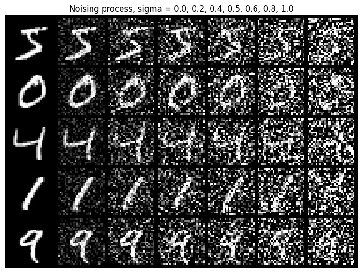
1.2.1: Training
The denoiser is trained with σ = 0.5, D = 128, batch size 256, Adam with learning rate 1e-4 and an MSE loss, for 5 epochs. The noise is added when each batch is loaded, so every epoch sees different noise on the same digits.
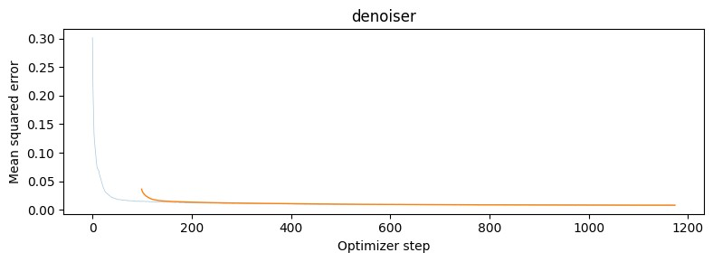
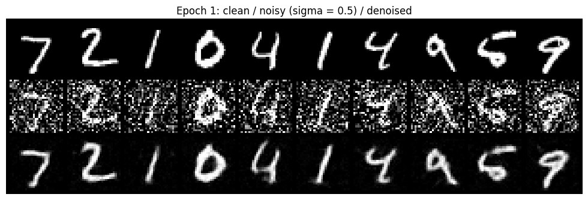
The loss drops very quickly in the first 100 steps and then slowly levels off at about 0.01. After 1 epoch the digits are already readable but faint and smudged (like the 4 and the 5). After 5 they are sharp and very close to the clean digits.
1.2.2: Out-of-distribution noise
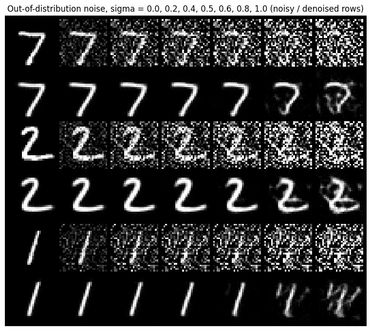
Below the training noise level the denoiser is perfect, and it still works at 0.6. At 0.8 and 1.0 it breaks down: it has only learned to remove noise of strength 0.5, so it keeps some of the noise as strokes, and the 7 starts looking like a 9 and the 1 grows extra lines.
1.2.3: Denoising pure noise
The same training again, but the input is pure noise with no digit in it, so this would be a generative model if it worked.
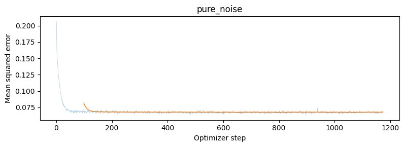
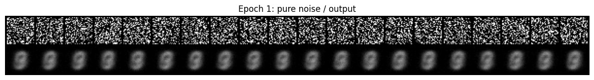
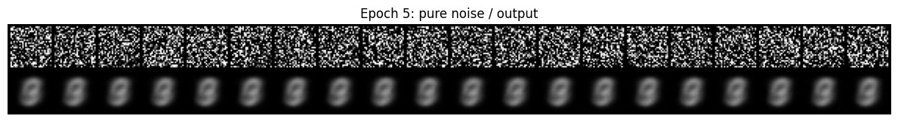
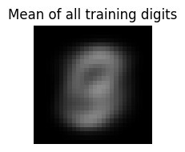
Every output is the same blurry blob, no matter what noise goes in, and it looks like a 0, an 8 and a 3 drawn on top of each other. The loss stops improving after about 100 steps (at about 0.068). This is because the input tells the model nothing about which digit it should output. With an MSE loss, the best single guess for a set of targets is their average (like the centroid in k-means), so the model learns to output the average of all training digits for every input. This matches the actual mean of the training set above.
2.1: Adding time conditioning
Main idea: instead of jumping to the clean image in one go, the UNet predicts the velocity x1 - x0 at a time t, so it can take many small steps from noise (x0) to a digit (x1). The model needs to know t, so t goes through two FCBlocks (Linear, GELU, Linear), and their outputs scale the decoder's features after Unflatten and after the first UpBlock.
t1 = self.fc1_t(t)[..., None, None] # (N, 2D, 1, 1), broadcasts over 7x7
t2 = self.fc2_t(t)[..., None, None] # (N, D, 1, 1), broadcasts over 14x14
...
h = self.unflatten(self.flatten(x2)) * t1
h = self.up1(torch.cat([x2, h], dim=1)) * t22.2: Training
Each batch gets a random t from U[0, 1] for every image, and the loss is the MSE between the predicted and the true velocity. D = 64, batch size 64, Adam starting at 1e-2, and an exponential scheduler with gamma = 0.11/10, so the learning rate ends at 1e-3 after 10 epochs.
x_0 = torch.randn_like(x_1)
t = torch.rand(x_1.shape[0], device=x_1.device)
x_t = (1 - t[:, None, None, None]) * x_0 + t[:, None, None, None] * x_1
loss = F.mse_loss(unet(x_t, t), x_1 - x_0)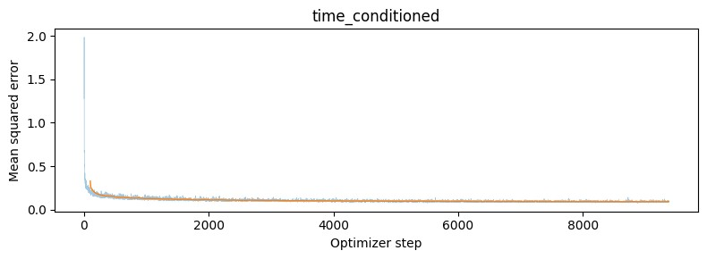
2.3: Sampling
Sampling starts from noise and takes 50 Euler steps of size 1/50. The same 40 noise images are used at every checkpoint.
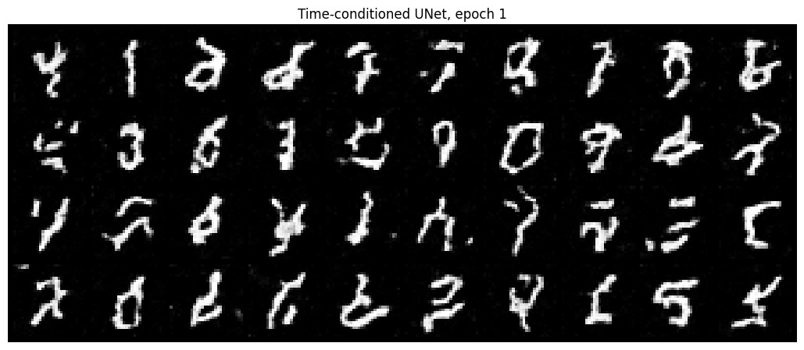
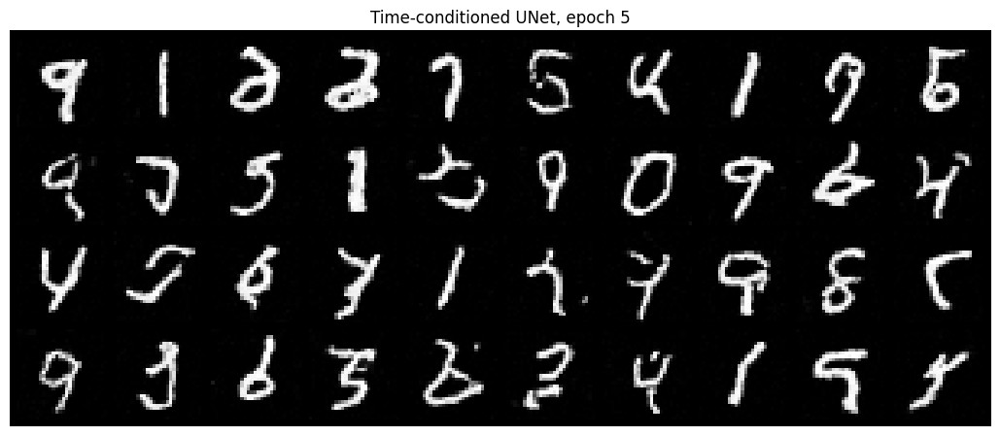
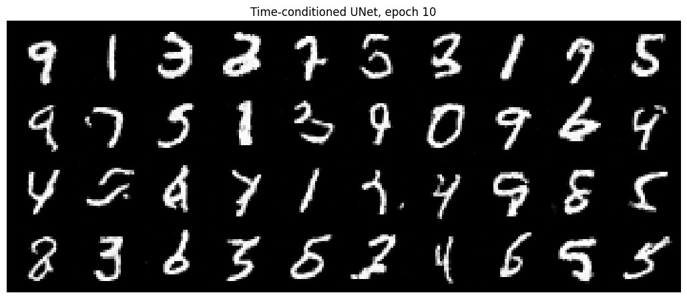
After 1 epoch they are scribbles with the right thickness and style, but only a few are digits. By epoch 5 most are digit-like, and by epoch 10 most can be read (9, 1, 3, 5, 0, 8), though a few are still odd shapes. Since the same noise is used each time, the same sample slowly turns into a cleaner digit across the checkpoints.
2.4: Adding class conditioning
The class is a one-hot vector that goes through two more FCBlocks. It scales the features and the time embedding is added on top. 10% of the time the class vector is set to all zeros during training, so the same model also learns to generate without a class, which is needed for CFG.
c = F.one_hot(c, self.num_classes).float()
if mask is not None:
c = c * mask.float()[:, None] # an all-zero vector means "no class"
...
h = self.fc1_c(c)[..., None, None] * h + self.fc1_t(t)[..., None, None]
h = self.up1(torch.cat([x2, h], dim=1))
h = self.fc2_c(c)[..., None, None] * h + self.fc2_t(t)[..., None, None]2.5: Training
The same settings as the time-only model (D = 64, batch size 64, Adam from 1e-2 with the same scheduler, 10 epochs).
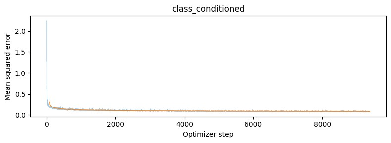
2.6: Sampling with CFG
Each step predicts the velocity with the class and without it, and combines them as vu + γ(vc - vu) with γ = 5, over 300 Euler steps. Each row is digits 0 to 9, with 4 samples of each.
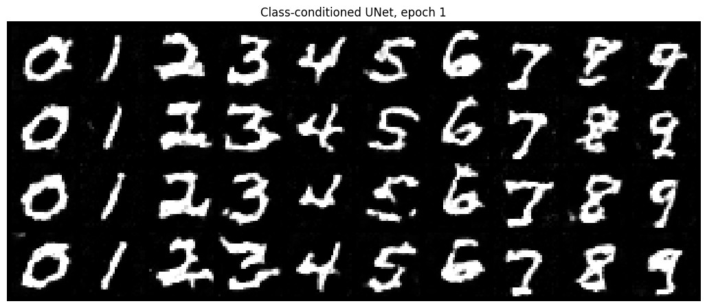
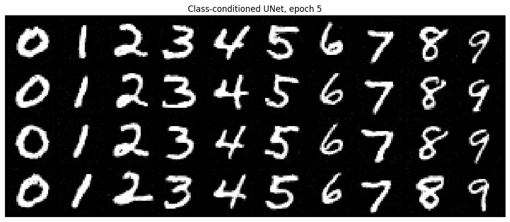
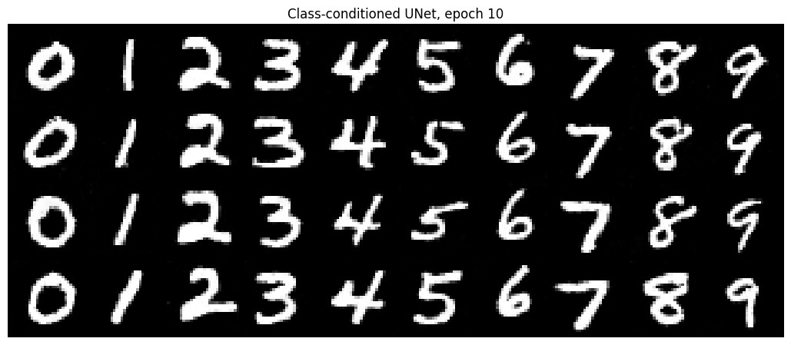
Even after 1 epoch every digit is the right class, just blotchy (like the 2s and 3s). By epoch 5 they are clean, and by epoch 10 they are clean with different handwriting styles within each column (the 1s lean different ways, and the 4s are open and closed). This is much better than the time-only model, since the model does not have to decide which digit to draw on its own.
Removing the learning rate scheduler
The scheduler starts at 1e-2 and goes down to 1e-3 by the end: big steps early to learn quickly, and small steps at the end to settle. Keeping 1e-2 the whole time would never take the small steps. So to make up for removing the scheduler, I trained a new model with a constant learning rate of 1e-3, the rate the scheduler ends at, with everything else the same.
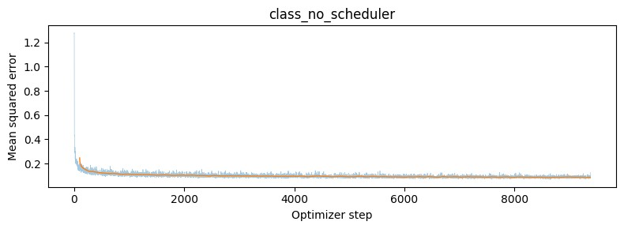
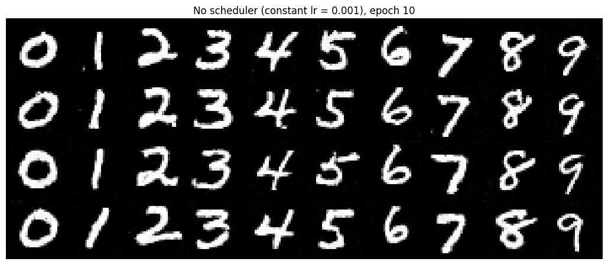
The results are just as good as with the scheduler: every digit is the right class and clean, with similar variety, and the loss curve ends at about the same level. Adam already adjusts the step size for each weight, so a constant 1e-3 is small enough to settle at the end and still large enough to train well within 10 epochs.